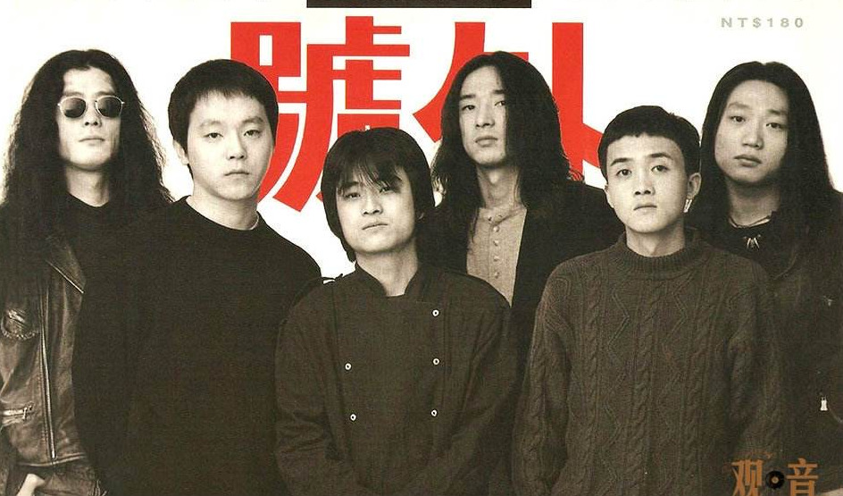

Berlín
París
Londres
Madrid
TANG DYNASTY
Disfruta de la primera gira de Tang Dinasty por Europa en la historia
Tang Dinasty, el aclamado grupo de Heavy Metal, se reúne de nuevo 15 años después para dar su primera gira fuera de Asia, visitarán Madrid, Berlín, París y Londres.
¡Hazte ya con tu entrada!